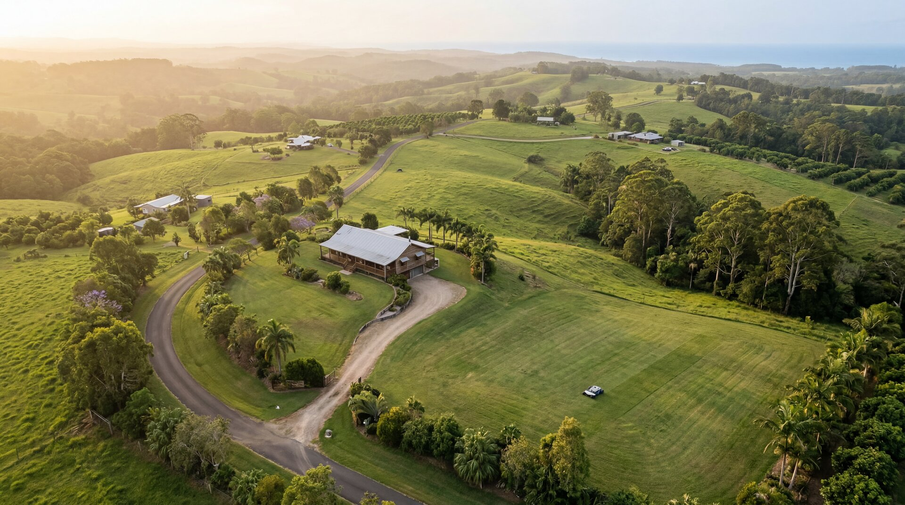

Steep Block Mowing Solutions for the Northern Rivers Hinterland
Why Steep Block Mowing in the Northern Rivers Demands a Smarter Approach If you own rural property across the Byron Bay hinterland, you already know the challenge: steep block mowing…

Why Steep Block Mowing in the Northern Rivers Demands a Smarter Approach
If you own rural property across the Byron Bay hinterland, you already know the challenge: steep block mowing in the Northern Rivers isn't just difficult—it's dangerous, time-consuming, and expensive. The rolling hills that make this region so beautiful also make traditional mowing methods impractical. Ride-on mowers tip on inclines, walk-behind units exhaust you within the hour, and hiring contractors means coordinating schedules, paying premium rates, and never quite knowing when the job will be done. For acreage owners from Bangalow to Federal, from Clunes to Mullumbimby, there's now a better solution that handles slopes up to 38 degrees without putting anyone at risk.
AutoAcre brings autonomous mowing technology to the Northern Rivers, specifically engineered for the terrain challenges our region presents. Using the PANDAG G1 robotic mower—a commercial-grade autonomous unit with GPS-RTK precision navigation—we've solved the steep block mowing problem that's frustrated hinterland property owners for generations. This isn't a backyard robot that gets confused by a garden bed. The PANDAG G1 covers up to 25 acres per day, navigates complex boundaries with centimetre-level accuracy, and handles slopes that would send conventional mowers tumbling.
The Real Cost of Traditional Steep Block Mowing in the Northern Rivers
Most acreage owners in Ewingsdale, Newrybar, and across the Northern Rivers plateau are spending between $800 and $1,500 per month on mowing contractors, or sacrificing entire weekends to do it themselves. When you factor in the physical toll, the safety risks on slopes, the fuel costs, the equipment maintenance, and the sheer unpredictability of weather windows, traditional mowing approaches are neither sustainable nor economical.
Steep blocks present specific dangers. Every year, rural property owners across Australia are injured or killed in ride-on mower rollovers on slopes. The steeper the terrain, the slower and more cautious you must be—which means more hours, more fuel, and more exposure to risk. Contractors charge premium rates for steep work because they know the liability involved. Many simply won't take on properties with significant slope challenges, leaving owners with limited options and no leverage on pricing.
Then there's the inconsistency. Your contractor cancels because of wet ground. You can't mow for three weeks during the growing season. The grass gets away from you, requiring multiple passes and higher costs to bring it back under control. Fire season approaches and your fuel load becomes a liability. Council notices arrive. Insurance assessors raise concerns. The stress compounds.
How Autonomous Steep Block Mowing Actually Works on Northern Rivers Properties
AutoAcre's approach is straightforward: you purchase the PANDAG G1 robotic mower outright for $33,490, then engage AutoAcre for ongoing management services. The monthly management fee is tiered based on your property size—starting from $260 per month for four acres, scaling to $650 per month for ten acres. This covers all scheduled maintenance, blade replacements, firmware updates, system monitoring, and repair coordination. You own the asset. We ensure it runs flawlessly, season after season.
The PANDAG G1 uses GPS-RTK technology—the same satellite positioning system used in precision agriculture and surveying—to navigate your property with centimetre-level accuracy. We map your boundaries, exclusion zones, and preferred mowing patterns during installation. From that point forward, the unit operates autonomously on a schedule that suits your property's growth patterns and your aesthetic preferences. It doesn't need line-of-sight supervision. It doesn't need daily intervention. It simply does the work, consistently and safely, regardless of slope.
The 38-degree slope capability means the PANDAG G1 handles terrain that would be considered dangerous or impossible for conventional methods. Those hillsides running down to creeklines in Myocum? Managed. The steep approach to your Brooklet ridgeline building site? Maintained. The challenging contours around your Tyagarah dam? Navigated precisely, every time.
Steep Block Mowing Across Every Corner of the Northern Rivers
AutoAcre services the full spectrum of hinterland properties across the Byron Shire and Ballina Shire regions. From the elevated pockets of Nashua and Eureka where every property seems to perch on a hillside, to the gentler but still complex terrain around Alstonville and Teven, to the coastal slopes of Tintenbar—we understand the specific mowing challenges each microclimate and soil type presents.
In Federal and the upper reaches of the hinterland, properties often feature a combination of cleared grazing land, regenerating bush margins, and steep firebreaks that need consistent management. The PANDAG G1 excels in these mixed-use scenarios, maintaining the areas you want kept short while respecting the boundaries you've defined for native regrowth.
Closer to the coast, in Bangalow, Newrybar, and Byron Bay proper, properties tend toward lifestyle acreage—smaller holdings where aesthetics matter as much as fire management, and where the undulating volcanic soil landscape creates pockets of steep terrain even on relatively modest blocks. Here, the precision and consistency of autonomous mowing delivers a manicured result that mirrors the premium character of the properties themselves.
The AutoAcre Management Advantage for Hinterland Property Owners
Owning the PANDAG G1 mower means you hold a valuable asset that enhances your property value and capability. AutoAcre's management service means you never have to think about the technical details. We handle blade sharpness and replacement schedules. We monitor system performance remotely. We coordinate any repairs with manufacturer support. We adjust mowing patterns seasonally as your grass growth rates change. We ensure firmware stays current so your unit benefits from ongoing improvements in navigation algorithms and efficiency.
This is a grounded, dependable service built for the realities of rural property management in the Northern Rivers. No gimmicks. No over-promising. Just reliable autonomous mowing that works in the conditions we actually face—summer storms, winter mud, spring growth surges, and the constant challenge of keeping steep blocks maintained to a standard that protects your investment and meets your obligations.
For property owners who value their time, their safety, and their peace of mind, the AutoAcre approach represents a fundamental shift. Instead of mowing being a recurring problem that demands your attention every fortnight, it becomes a solved challenge—handled by technology you own, managed by specialists who understand the terrain.
Ready to Solve Your Steep Block Mowing Challenge?
If you're tired of the risk, expense, and inconsistency of traditional mowing methods on your Northern Rivers property, it's time to explore what autonomous technology can deliver. AutoAcre owner Ben Bonifant is available to discuss your specific property requirements, assess your terrain challenges, and provide a detailed proposal tailored to your acreage. Contact Ben directly on 0499 649 094, or request a detailed quote and site assessment at autoacre.com.au/quote.html. See the PANDAG G1 in action and understand exactly how steep block mowing in the Northern Rivers becomes simple, safe, and sustainable with the right technology and the right management partner.
Frequently asked questions
Can robotic mowers handle the steep slopes common in Northern Rivers hinterland properties?
The PANDAG G1 robotic mower navigates slopes up to 38 degrees, making it well-suited to the hilly terrain throughout Byron Bay and Northern Rivers hinterland acreages. AutoAcre's Buy + Manage model means you purchase the G1 outright for $33,490, then pay a monthly management fee starting at $260 for 4 acres, covering all scheduled maintenance and repair coordination for steep-block mowing.
What's the safest way to mow steep acreage blocks in the Byron hinterland?
Robotic mowers eliminate the safety risks of riding mowers or walk-behinds on steep hinterland blocks, as there's no operator on board during operation. The PANDAG G1's GPS-RTK navigation system maintains consistent coverage across slopes up to 38 degrees without human exposure to rollover hazards common on Northern Rivers terrain.
How much does professional steep-slope mowing cost for Northern Rivers acreage properties?
AutoAcre offers steep-slope mowing through a Buy + Manage model: you purchase the PANDAG G1 for $33,490, then pay tiered monthly management from $260/month for 4 acres up to $650/month for 10 acres. This includes all scheduled maintenance, monitoring, and repair coordination by owner Ben Bonifant (0499 649 094) across Byron Bay and Northern Rivers hinterland properties.
More answers in the AutoAcre FAQ, or browse the glossary.